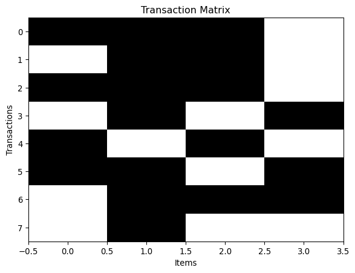
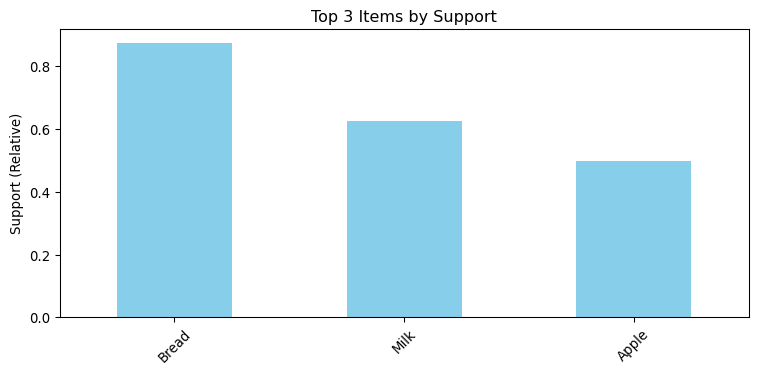
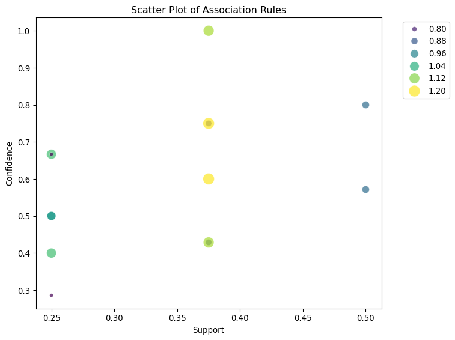
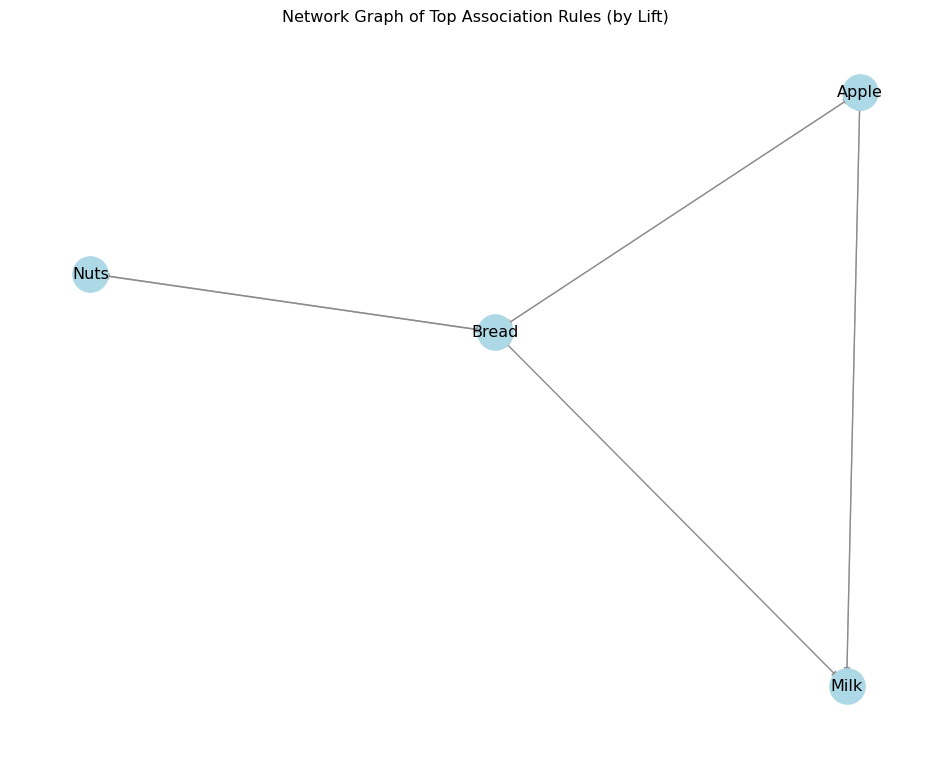

import numpy as np
import pandas as pd
import matplotlib.pyplot as plt
import seaborn as sns10 Association Rules
10.1 Overview
Association rule learning (or simply association rules) is a rule-based approach for uncovering interesting patterns or regularities within large datasets. This technique focuses on discovering relationships between items in transactional datasets using metrics such as support, confidence, and lift.
This section walks through the process of association rule mining in Python. A transaction dataset is analyzed to identify frequently co-occurring itemsets using the Apriori algorithm. Based on user-defined thresholds for support and confidence, association rules are extracted and evaluated. Visualizations can further aid interpretation of the discovered patterns.
10.2 Preliminaries
10.2.1 Packages
mlxtendfor Apriori and association rule mining
pandasfor data manipulation
matplotlibandseabornfor visualization (optional)
10.2.2 Data
We begin with a list of transactions, each containing a set of items.
transactions = [
['Milk', 'Bread', 'Apple'],
['Milk', 'Bread'],
['Milk', 'Bread', 'Apple'],
['Bread', 'Nuts'],
['Milk', 'Apple'],
['Bread', 'Apple', 'Nuts'],
['Milk', 'Bread', 'Nuts'],
['Bread'],
]
Arrayed Data to Transaction Lists
- Import the Transaction data into a Pandas DataFrame (table) using read_csv and label it myData.
Make sure to set header to 'None' since there is no header row in the CSV file. Enter:
myData = pd.read_csv('Transaction.csv', header = None)
myData.head()| 0 | 1 | 2 | 3 | 4 | |
|---|---|---|---|---|---|
| 0 | keyboard | mouse | headphone | NaN | NaN |
| 1 | keyboard | SDcard | mouse | NaN | NaN |
| 2 | headphone | NaN | NaN | NaN | NaN |
| 3 | keyboard | NaN | NaN | NaN | NaN |
| 4 | keyboard | SDcard | mouse | USBdrive | NaN |
- Then, convert the transactions to a suitable list structure using list comprehension and store it in the variable Transactions.
The Pandas isnull function is used in the code below to remove missing values (i.e., as indicated by NaN values in the output above). More specifically, the Python bitwise operator (i.e., ~) is used in conjunction with isnull to keep only not null values. Enter:
list_trans = [
tran[~pd.isnull(tran)]
for tran in myData.values
]To see the first five transactions, we can use a slice. Enter:
list_trans[:5][array(['keyboard', 'mouse', 'headphone'], dtype=object),
array(['keyboard', 'SDcard', 'mouse'], dtype=object),
array(['headphone'], dtype=object),
array(['keyboard'], dtype=object),
array(['keyboard', 'SDcard', 'mouse', 'USBdrive'], dtype=object)]10.2.2.1 Convert to Transaction Format
To create a frequency table and frequency plot, we can use the TransactionEncoder in the package mlxtend and its fit_transform method.
https://anaconda.org/conda-forge/mlxtend
conda install conda-forge::mlxtend
from mlxtend.preprocessing import TransactionEncoder
encoder = TransactionEncoder()
coded_trans = encoder.fit_transform(transactions)
coded_trans # array (n_transactions, n_unique_items)array([[ True, True, True, False],
[False, True, True, False],
[ True, True, True, False],
[False, True, False, True],
[ True, False, True, False],
[ True, True, False, True],
[False, True, True, True],
[False, True, False, False]])https://rasbt.github.io/mlxtend/api_subpackages/mlxtend.preprocessing/
10.2.2.2 Explore Basic Properties
You can inspect the encoded data and retrieve basic statistics:
# (no. transactions, no. unique items)
num_transactions, num_items = coded_trans.shape
print(f"No. transactions = {num_transactions}, \tNo. items = {num_items}")No. transactions = 8, No. items = 4From the encoder, the column information about the encoded item matrix (i.e., the sorted item name list) can be retrieved:
encoder.columns_ # a sorted list of item names
encoder.columns_mapping_ # a mapping dictionary for item names and column indices{'Apple': 0, 'Bread': 1, 'Milk': 2, 'Nuts': 3}You can also visualize the transactions as a binary image:
import matplotlib.pyplot as plt
plt.imshow(coded_trans, aspect='auto', cmap='Greys')
plt.title("Transaction Matrix")
plt.xlabel("Items")
plt.ylabel("Transactions")
plt.show()
10.3 Association Rules
To conduct the association rule analysis, we use the apriori function in the efficient-apriori package, which is available on PyPI and can be installed via pip in a code cell using %pip install efficient-apriori. Once installed, we can call the function and specify our desired min_support (minimum support) and min_confidence (minimum confidence) to match the values used in the R example in the text (i.e., 0.1 and 0.5, respectively). Enter:
10.3.1 Frequency of Single Items
For easy of handling the data, let’s keep the encoded data in a Pandas DataFrame:
df_trans = pd.DataFrame(coded_trans, columns = encoder.columns_)The absolute support of each item (i.e., how many times it appears across all transactions) can be calculated using sum() :
# Absolute support (frequency)
df_trans.sum().sort_values(ascending=False)Bread 7
Milk 5
Apple 4
Nuts 3
dtype: int64Similarly, the (relative) support of each item (i.e., how often it appears across all transactions) can be calculated using the mean() method on the binary matrix.
# Relative support (frequency proportion)
df_trans.mean().sort_values(ascending=False)Bread 0.875
Milk 0.625
Apple 0.500
Nuts 0.375
dtype: float64
Note
The supports can be manually calculated by dividing them by the number of transactions:
df_trans.sum().sort_values(ascending=False) / df_trans.shape[0]Bread 0.875
Milk 0.625
Apple 0.500
Nuts 0.375
dtype: float6410.3.1.1 Bar Plot of Frequent Items
Visualizing item frequency with a bar chart:
we use the Pandas sort_values function to display the result sorted in descending order (i.e., ascending is set to False).
import matplotlib.pyplot as plt
item_support = df_trans.mean().sort_values(ascending=False)
top_items = item_support.head(3)
plt.figure(figsize=(8,4))
top_items.plot(kind='bar', color='skyblue')
plt.title("Top 3 Items by Support")
plt.ylabel("Support (Relative)")
plt.xticks(rotation=45)
plt.tight_layout()
plt.show()
10.3.2 Frequent Itemset Generation
The total number of non-empty itemsets given d as the number of unique items is \(2^d -1\).
d = df_trans.shape[1]
2**d - 115So, instead of generating all itemsets, we use a smart algorithm to extract only the frequent ones. In this example, let’s the Apriori algorithm in mlxtend.
from mlxtend.frequent_patterns import apriori
frequent_itemsets = apriori(
df_trans,
min_support=0.2,
use_colnames=True
)
frequent_itemsets.sort_values(by="support", ascending=False).head(10)| support | itemsets | |
|---|---|---|
| 1 | 0.875 | (Bread) |
| 2 | 0.625 | (Milk) |
| 0 | 0.500 | (Apple) |
| 6 | 0.500 | (Milk, Bread) |
| 3 | 0.375 | (Nuts) |
| 4 | 0.375 | (Bread, Apple) |
| 5 | 0.375 | (Milk, Apple) |
| 7 | 0.375 | (Nuts, Bread) |
| 8 | 0.250 | (Bread, Milk, Apple) |
You can filter frequent itemsets by length (e.g., 2-itemsets only):
frequent_2_itemsets = frequent_itemsets[
frequent_itemsets['itemsets'].apply(lambda x: len(x) == 2)
]
frequent_2_itemsets| support | itemsets | |
|---|---|---|
| 4 | 0.375 | (Bread, Apple) |
| 5 | 0.375 | (Milk, Apple) |
| 6 | 0.500 | (Milk, Bread) |
| 7 | 0.375 | (Nuts, Bread) |
Warning
For larger datasets, too-loosen parameters (e.g., small support and minlen) that generate a huge number of itemsets may cause an error due to running out of memory.
10.3.3 Association Rule Generation
Now we generate association rules from the frequent itemsets using a minimum support and confidence threshold:
from mlxtend.frequent_patterns import association_rules
rules = association_rules(
frequent_itemsets,
metric="confidence",
min_threshold=0.2
)
rules.shape
rules.columnsIndex(['antecedents', 'consequents', 'antecedent support',
'consequent support', 'support', 'confidence', 'lift',
'representativity', 'leverage', 'conviction', 'zhangs_metric',
'jaccard', 'certainty', 'kulczynski'],
dtype='object')To sort and inspect the top 3 rules by lift:
rules_sorted = rules.sort_values(by='lift', ascending=False)
rules_sorted.head(3)[['antecedents', 'consequents', 'support', 'confidence', 'lift']]| antecedents | consequents | support | confidence | lift | |
|---|---|---|---|---|---|
| 3 | (Apple) | (Milk) | 0.375 | 0.750000 | 1.200000 |
| 2 | (Milk) | (Apple) | 0.375 | 0.600000 | 1.200000 |
| 7 | (Bread) | (Nuts) | 0.375 | 0.428571 | 1.142857 |
10.4 Rule Evaluation
The association_rules() function provides multiple interestingness metrics, including: - Support - Confidence - Lift - Leverage - Conviction
To access them:
rules[['support', 'confidence', 'lift', 'leverage', 'conviction']].head(3)| support | confidence | lift | leverage | conviction | |
|---|---|---|---|---|---|
| 0 | 0.375 | 0.428571 | 0.857143 | -0.0625 | 0.875 |
| 1 | 0.375 | 0.750000 | 0.857143 | -0.0625 | 0.500 |
| 2 | 0.375 | 0.600000 | 1.200000 | 0.0625 | 1.250 |
Although mlxtend does not support additional metrics like “chiSquared” or “gini” natively, these can be computed manually or using other libraries like Orange3 or sklearn if needed for deeper evaluation.
10.5 Association Rule Visualizations
While the true value of association rule mining often lies in large-scale applications, visualization is a powerful way to interpret and communicate the discovered patterns. Python offers several options to visualize association rules and frequent itemsets.
10.5.1 Scatterplot of Rules
We can plot each rule using support, confidence, and lift to explore their distribution:
plt.figure(figsize=(8,6))
sns.scatterplot(
data=rules,
x='support',
y='confidence',
size='lift',
hue='lift',
palette='viridis',
alpha=0.7,
sizes=(20, 200)
)
plt.title("Scatter Plot of Association Rules")
plt.xlabel("Support")
plt.ylabel("Confidence")
plt.legend(bbox_to_anchor=(1.05, 1), loc='upper left')
plt.tight_layout()
plt.show()
10.5.2 Network Graph of Association Rules
For a more intuitive, graph-based representation of how items are associated:
import networkx as nx
# Use top N rules with highest lift
top_rules = rules.sort_values(by='lift', ascending=False).head(10)
G = nx.DiGraph()
for idx, row in top_rules.iterrows():
for ante in row['antecedents']:
for cons in row['consequents']:
G.add_edge(ante, cons, weight=row['lift'])
plt.figure(figsize=(10,8))
pos = nx.spring_layout(G, k=0.5, seed=42)
edges = G.edges()
weights = [G[u][v]['weight'] for u,v in edges]
nx.draw_networkx_nodes(G, pos, node_size=700, node_color='lightblue')
nx.draw_networkx_edges(G, pos, width=weights, edge_color='gray', alpha=0.7)
nx.draw_networkx_labels(G, pos, font_size=12)
plt.title("Network Graph of Top Association Rules (by Lift)")
plt.axis('off')
plt.tight_layout()
plt.show()
These visualizations help uncover dominant associations, item importance, and structural patterns within the rules—bringing clarity to large or complex datasets.